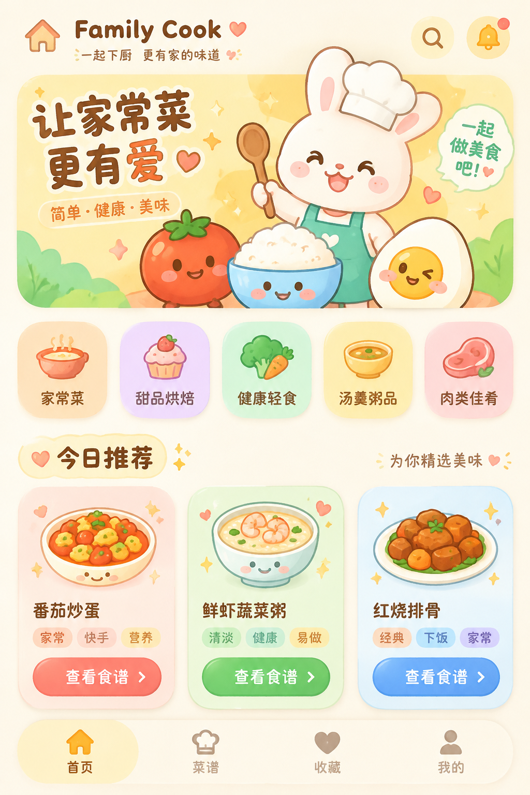
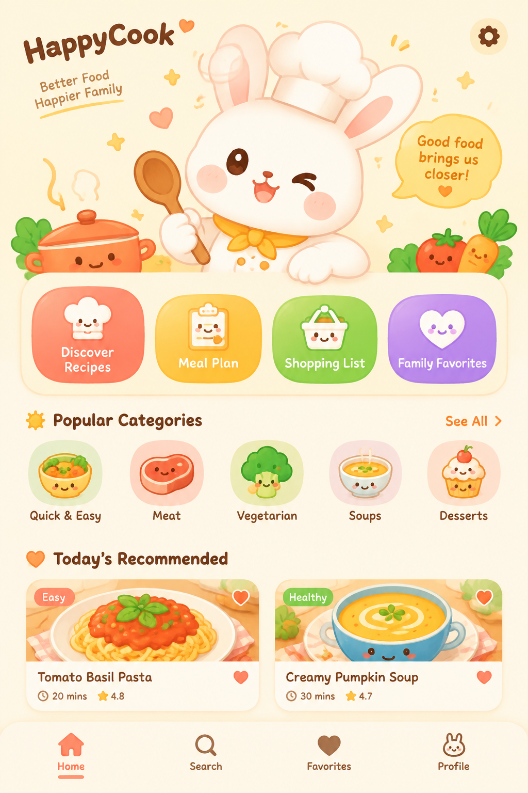
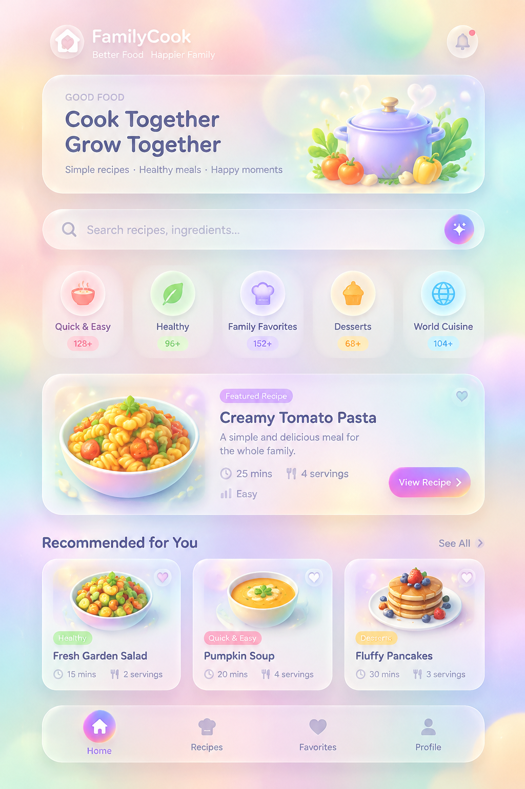
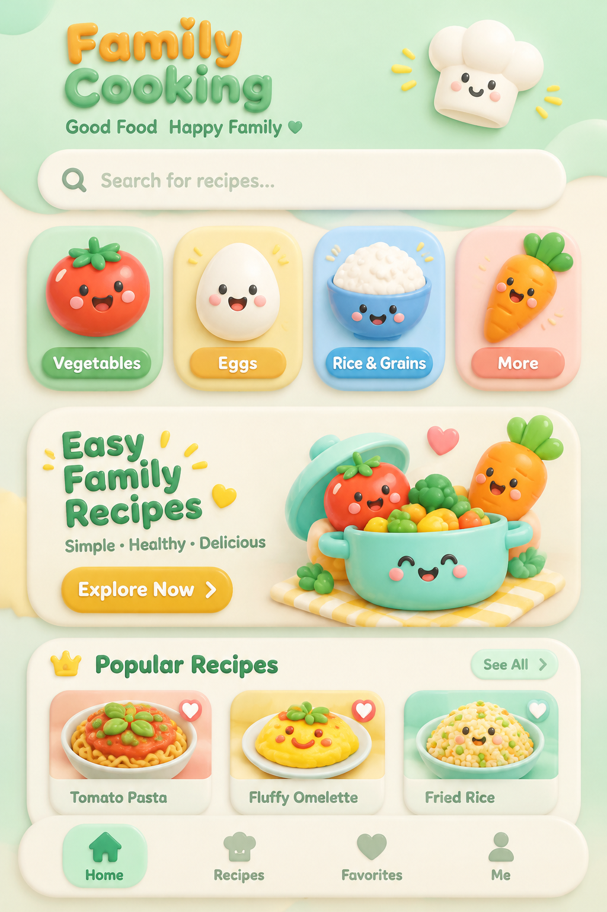
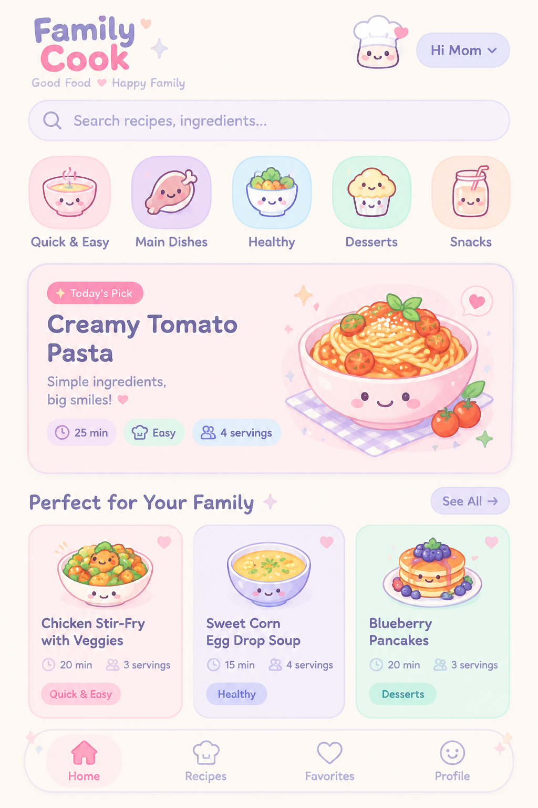

01 · 可爱治愈系
粉彩奶油底 + 超大圆角 + 会笑的食物角色（番茄、米饭、鸡蛋都有表情）+ 贴纸式小徽章。最「软萌」的一版。

粉彩奶油底 + 超大圆角 + 会笑的食物角色（番茄、米饭、鸡蛋都有表情）+ 贴纸式小徽章。最「软萌」的一版。

把兔子主厨放成首屏主角，配对话气泡、爱心与蒸汽涂鸦。IP 感最强，辨识度和记忆点最高。

桃紫薄荷渐变底 + 磨砂玻璃卡片 + 彩色光晕。最「漂亮/高级」，偏精致现代风。

暖色水粉笔触画厨房与炖锅，有手绘质感和艺术气息。最有「家常烟火气」的美感。

糖果色 + 鼓起来的粘土质感卡片 + 3D 立体食物图标。最「玩具感」的可爱，点击欲强。

马卡龙粉紫薄荷配色 + 大圆角浅色卡 + 细描边。甜而不腻，适合偏女性与家庭用户。